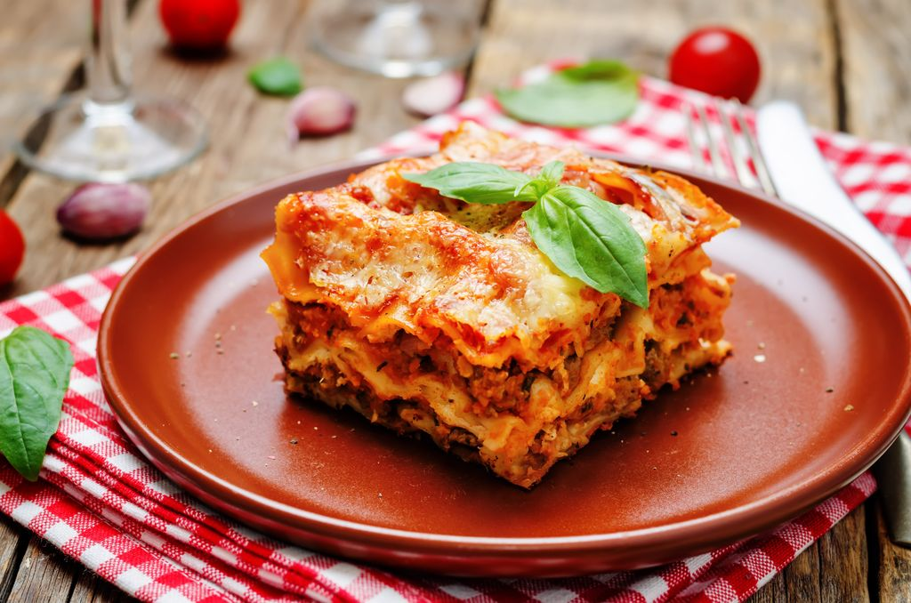

Lasagna

This is a recipe of my dear friend. Never had a better lasagna!
Ingredients
- Lasagna noodles 1 pack
- Minced meat 500 g
- Onions 1 to 2
- Garlic gloves 1 to 2
- Sieved tomatoes 1 can
- Choped tomatoes 1 can (2 in case there are no sieved ones)
- Tomato paste according to taste
- Salt according to taste
- Pepper according to taste
- Sugar according to taste
- Oregano according to taste
- Basil according to taste
- Rosemary, only a bit
- Flour
- Butter 50 g
- Milk 600 ml
- Nutmeg according to taste
- Chesse according to taste
Steps
- Chop the onions and garlic gloves and sweat them in a pan.
- Add the meat and sear it until it's crumbly.
- Add the tomato cans and if you want some extra tomato taste add some tomato paste.
- Add salt, pepper, sugar, oregano, basil and rosemary bit by bit until it tastes good. Then let it simmer while you prepare the bechamel-sauce.
- Preheat the oven to 200 °C.
- Melt the butter and then stir in the flour, but take care not to let it go brown.
- Add the milk bit by bit while you continuously stir until all the milk is added. Keep the temperature high enough to let it simmer, but don't stop stirring or it goes brown.
- Add nutmeg, pepper, and salt until it tastes good. Now take it off the stove.
- Take a casserole dish and build the lasagna layers of 1. sauce, 2. lasagna noodles, 3. bechamel-sauce. Continue in this order until the ingredients are used up.
- Now add some cheese of your choosing on top and put it in the oven for 40 to 60 minutes.